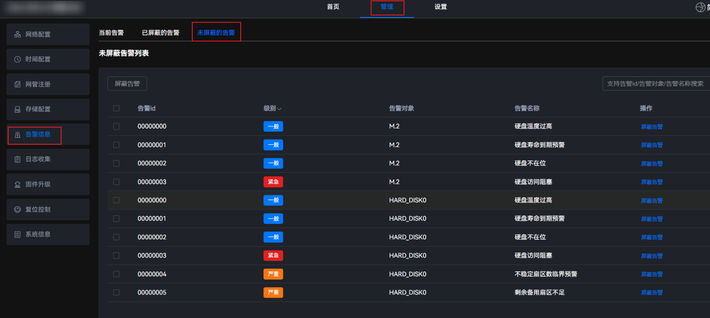
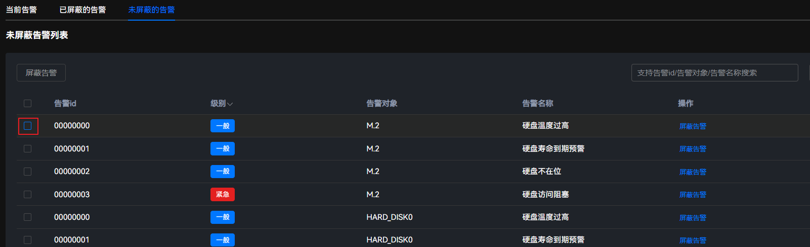
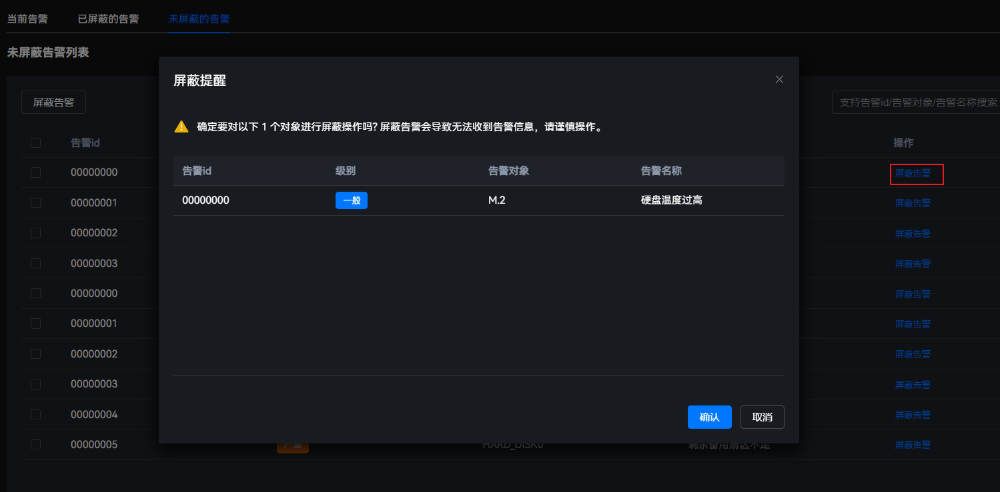

使用场景
初始状态下，用户可在此页面查看系统所有告警。若用户想忽略某些告警，可执行以下操作进行屏蔽，屏蔽后的告警在“当前告警”页面将不会再显示。
添加告警屏蔽
- 在主菜单中选择。
进入“未屏蔽的告警”界面，可查看告警的数量、告警ID、级别、告警对象以及告警名称。
图1 未屏蔽的告警
 - 勾选目标告警所在行的
 。图2 选择告警
。图2 选择告警
 - 单击“屏蔽告警”，弹出操作确认提示框。图3 屏蔽告警
 - 单击“确认”。
初始状态下，用户可在此页面查看系统所有告警。若用户想忽略某些告警，可执行以下操作进行屏蔽，屏蔽后的告警在“当前告警”页面将不会再显示。
进入“未屏蔽的告警”界面，可查看告警的数量、告警ID、级别、告警对象以及告警名称。
。